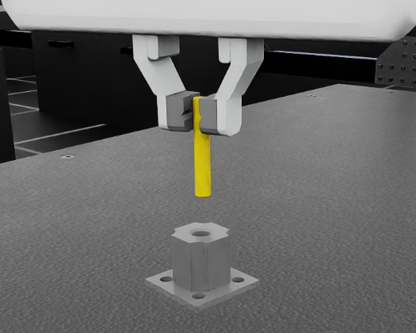

Isaac Lab Factory PegInsert：多尺度几何、非对称Critic、循环PPO

仿真任务场景Isaac-Factory-PegInsert-Direct-v0 / 3c6e67bb5c7ada942a6d1884ab69338f57596f77，Franka已抓住8mm销，从孔口附近开始插入；不是从桌面抓取再装配的完整流程。源码 源码
4个关键点沿模型定义的偏移放置、尺度.15m，d=mean_i||kp_held,i−kp_target,i||。令S(a,b,d)=1/(exp(−ad)+b+exp(ad))：
r=S(5,4,d)+S(50,2,d)+S(100,0,d)+I_engaged+I_success。
默认动作/动作变化惩罚权重均0。三个密集项同时启用，不是FSM切换；多尺度使大范围接近、小范围对齐和末毫米都有梯度。Direct路径没有额外dt乘数。源码 源码
I_engaged=1[xy_error<2.5mm ∧ z_error<22.5mm]，I_success=1[xy_error<2.5mm ∧ z_error<1mm]，来自实体姿态/几何，不是接触力阈值；不检验释放或停稳。成功奖励每步重复；只有10s结束，两种done掩码都返回timeout。日志successes在回合结束使用当前成功掩码，首次成功时间由单独锁存记录，二者语义不同。源码 源码
Actor实际19维，Critic43维（不能抄配置类初始声明21/72，因为构造函数会按obs_order重新求和）。Actor有末端相对带噪孔位、四元数、末端速度、上一动作；Critic额外有准确物体/孔位姿、臂关节等。6维姿态增量经EMA=.2、平移2cm/旋转.097rad尺度、目标围绕孔位±5cm及roll=π/pitch=0约束，再由任务空间力矩控制执行；每个物理子步重新相对当前末端生成目标，不能直接解读为整段67ms的净位移上限。源码 源码 源码
RL-Games配置虽然algo.name=a2c_continuous，但ppo=True，应归为PPO。128env×128rollout×200epochs=3,276,800配置环境步；mini_batch512，4次优化epochs；gamma.995、tau.95、clip.2、lr1e−4 adaptive/KL.008、entropy0，混合精度。Actor/central critic均2层1024 LSTM置于512/128/64 ELU MLP之前，seq128；输入与价值归一化，seed0。入口 ./isaaclab.sh -p scripts/reinforcement_learning/rl_games/train.py --task Isaac-Factory-PegInsert-Direct-v0 --headless。源码 源码 源码
可复用：局部预操作分布、多尺度对齐、执行控制器与非对称Critic。不能复制成功阈值来替代本项目按下后返回。代码注意事项：默认禁用的action范数省略dim，若开启会跨env汇总；不建议把它作为即插即用惩罚。（已见源代码，未执行重现。）源码